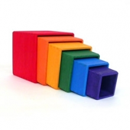
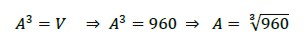
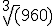
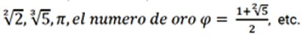
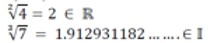

Números Irracionales - Radicales
En el siguiente problema encontraras una aplicación de los números irracionales y de operaciones con radicales. Te sugerimos que leas atentamente el planteo y completes los datos cuando sea necesario.
Un juguete para chicos está formado por una serie de cubos huecos de distinto tamaño a los que les falta una de sus caras: además de poder apilarse formando una torre, se pueden meter uno dentro de otro.
|
Para el diseño de este juguete habrá que tener en cuenta algunos requerimientos:
|
 |
¿Cuántos cubos compondrán el juego y cuál será la altura de la torre que se puede armar con todos ellos?
Comencemos por calcular la medida de las aristas del cubo mayor.
Si llamamos V al volumen de centímetros cúbicos y A a la arista en centímetros, resulta:

Si tratamos de calcular con la calculadora  vemos que el resultado es un número irracional, por lo cual podemos leer solo una aproximación de cierta cantidad de cifras.
Consideramos al radical como la medida exacta de A y trabajaremos con esta expresión.
Calculemos las medidas de los otros cubos y la altura de la torre.
Observen atentamente el modo en que operamos y completen los cálculos en la tabla, hasta que consideren que llegaron al último cubo.
Para controlar si respetan los topes permitidos para la altura de la torre y la arista del cubo más chico, aproximen cada valor obtenido redondeándolo a los dos décimos.
[1] Problema y actividades extraídas de Matemática I, P.J Kaczor, y otros, Editorial Santillana. Pag. 30-31.
En funcion del planteo del problema completa la siguiete tabla y parrafos con los datos que consideres necesarios.
Sigamos pensando un poco más con este problema:
Situación 1
Jugando, Martin apiló los cubos 1, 3 y 7, y Paula hizo lo mismo con los cubos 2, 4 y 6. ¿Cuál de las dos torres resultó más alta?
Situación 2
Calculá la diferencia exacta entre la torre de Martín y la de Paula.
Situación 3
Martín intentó armar una torre de cubos invertida, comenzando con el más pequeño y apilándolos de menor a mayor, sin saltearse ninguno. Pero Paula lo derribó en el momento en que tenía una altura de entre 20 y 25 cm. ¿Cuántos cubos había llegado a colocar Martin?
Para poder resolver estas situaciones de nuestro problema vamos primero a profundizar sobre algunos conceptos de los números irracionales.
Podemos decir que los números irracionales son aquellos que poseen infinitas cifras decimales no periódicas, que por lo tanto no pueden ser expresados como fracciones.
Son ejemplos de estos números:

A continuación, trabajaremos con el conjunto de números irracionales representados por radicales cuya resolución tiene infinitas cifras decimales.
El término radical se usa para referirse a expresiones del tipo:
Ejemplo:

En nuestro problema de los cubos, el radical es un número irracional.
Por medio de la visualización del siguiente video podrás ampliar el concepto de números irracionales:
Obra publicada con Licencia Creative Commons Reconocimiento Compartir igual 4.0